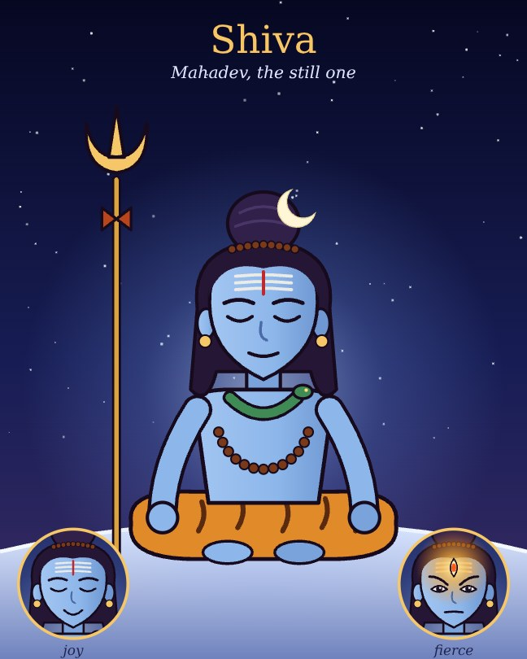

Every being in Shiva's world, drawn in one hand. The look of the Kirtimukha reel, turned into a cast, a canon and a plan for a following.

Kailash is a quiet white mountain under a deep indigo night, with a full moon top right. Everything that happens in this universe happens under that sky.
Every story explains something you have already seen in a temple.
That is the engine of the whole series. People have walked past the face above the temple door, the bull facing the shrine, the moon in the hair and the blue throat for their whole lives. A reel that finally tells them why gets saved, sent to family and argued about in the comments. A reel that only retells a myth gets a like.
A grandfather's voice at bedtime: calm, warm, never preachy. Gods are loved, never mocked. The comedy belongs to the Ganas, to Ganesha's appetite and to proud kings getting humbled.
One temple detail as the hook. One want, one refusal, one turn. Shiva speaks at most two lines. The last line is a teaching in under ten words, then the closing ritual.
No gore on screen, no mocking any deity or sect, no caste or politics, no claims the texts do not make. Where traditions differ, the narrator says "one telling says".
This is the look of the Kirtimukha reel, written down so that any hand, human or model, draws the same world.
A following forms around rituals people can join, a companion they love and a world that rewards paying attention. These are the eight habits that build one.
Shiva's own crowd is a wild, loyal, odd-looking family that he never turns away. That is the audience. Captions greet them as Ganas, and the three Gana characters become their stand-ins in comedy reels.
The app's mascot and the reels' mascot are the same calf. He never narrates. He reacts: one or two seconds in a corner, or the last frame sitting and facing Shiva. People will start looking for him.
In temples people whisper a wish into Nandi's ear. Every Monday one post invites the Ganas to comment their wish. It is a real custom, it fills the comments, and it leads straight to the app's sankalpa feature.
Every story ends with its teaching and then the same three words, as the Kirtimukha reel did: "That is sadhana." Followers will finish the sentence in the comments before the reel does.
Kirtimukha's face is hidden once in every reel: in a cloud, a carving, the pattern on a pot. "Found it" comments push each reel, and it honours his job of guarding every door.
Stories connect. Jalandhara is born in one reel, sends Rahu in another and falls in a third. Followers who have seen the earlier one explain it to newcomers, which is exactly what a fandom does.
Monday is Shiva's day, so the main story lands every Monday. Extra posts land on Pradosh, on the monthly Shivratri, through Shravan and on Mahashivratri.
Reels tell why. The app is where you do: 108 names, the pooja, the 40 days. Badge names in the app are characters in this book, so a streak feels like joining the story.
| Day | Post | Style | Job |
|---|---|---|---|
| Mon | The story, 40 to 50 seconds, plus Whisper to Nandi in the caption | Storybook | Reach and saves |
| Wed | One "why", 15 to 20 seconds: one temple detail, one answer | Storybook or paper map | Shares |
| Fri | Nandi and the Ganas: a streak joke, a japa reminder, a meme | Cartoon | Affection and app installs |
| Sun | The plate: one character from this book as a carousel | Book plates | Saves and lore |
Thirty-six stories in the order I would tell them. The hook is the temple detail or the question that opens the reel.
| # | Story | Opening hook | Saga | Cast |
|---|
Picks the story from the slate, writes the script and the shot list, and designs any new pose or prop on the rig.
Reads only the script and this book, splits the build into scenes and reviews every scene against the plates.
Smaller models run the voice, the renders, the frame checks and the dark-band check.
The cast lives in the reel project as code: one figure rig, one file of characters and one file of creatures. Every plate in this book is rendered from that code, so what you see here is exactly what appears in a reel.